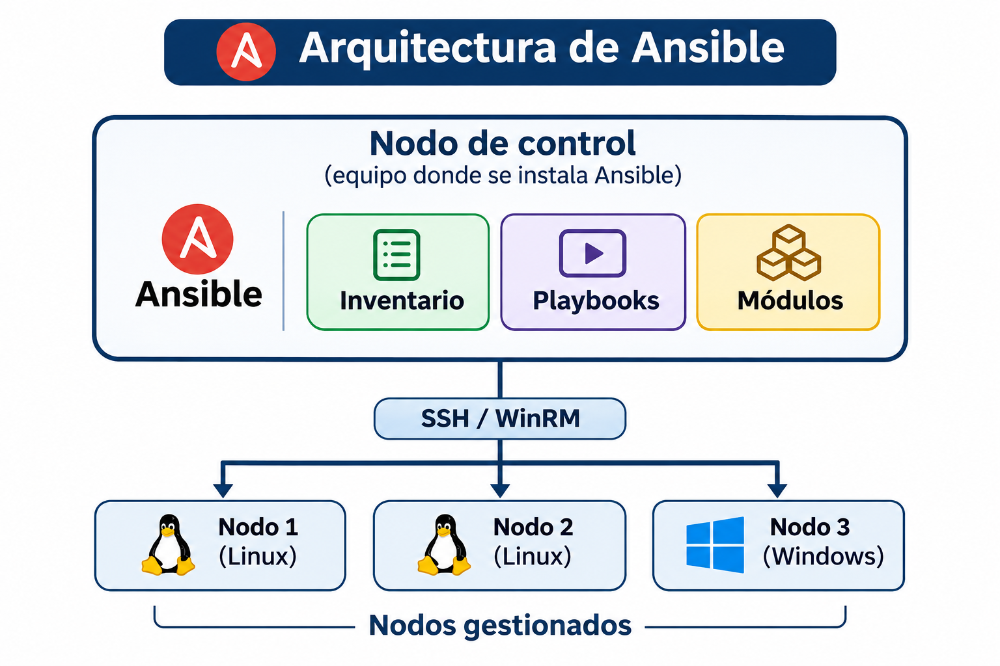

UT4. Ansible¶
Resultado de aprendizaje
Esta unidad trabaja el RA3 del RD 1629/2009: Gestiona la automatización de tareas del sistema, aplicando criterios de eficiencia y utilizando comandos y herramientas gráficas.
Duración: 8 horas.
1. Introducción¶
1.1 ¿Por qué automatizar?¶
Piensa en el aula de informática al empezar el curso: hay que instalar los mismos programas en todos los equipos, crear las cuentas del alumnado y dejar la red configurada. Hacerlo equipo por equipo lleva horas y, al final, siempre hay alguno al que le falta algo. Con los servidores ocurre lo mismo, con el agravante de que un error puede dejar un servicio sin funcionar.
Automatizar la administración aporta:
- Rapidez: lo que llevaba horas se hace en minutos y en paralelo.
- Coherencia: todos los equipos quedan exactamente igual.
- Escalabilidad: da igual gestionar 2 equipos que 200.
- Trazabilidad: la configuración queda escrita en ficheros que se pueden revisar y versionar con Git, como vimos en la UT0.
Este enfoque se conoce como Infraestructura como Código (IaC, Infrastructure as Code): la infraestructura se describe en ficheros de texto legibles, versionables y reutilizables, en lugar de configurarse a mano.
1.2 ¿Qué es Ansible?¶
Información
Ansible es una herramienta de automatización de código abierto, creada en 2012 y mantenida por Red Hat desde 2015. Describimos en ficheros YAML cómo queremos que estén los equipos, y Ansible se conecta a ellos y hace lo necesario para que queden así, actuando sobre muchos equipos a la vez desde un único punto de control.
Con Ansible se puede, entre otras cosas:
- Instalar y actualizar software.
- Crear usuarios y gestionar permisos.
- Configurar y arrancar servicios.
- Aplicar parches y medidas de seguridad.
- Desplegar una aplicación en varios servidores siguiendo un orden concreto.
1.3 Ansible frente a scripts¶
Hasta ahora hemos automatizado tareas con scripts Bash y cron. Ansible no los reemplaza, sino que los complementa para un nivel superior de automatización:
| Característica | Scripts Bash + cron | Ansible |
|---|---|---|
| Ejecución en múltiples servidores | Requiere bucles y SSH manual | Nativo, en paralelo |
| Idempotencia | Hay que programarla explícitamente | Incorporada en los módulos |
| Legibilidad | Depende del programador | YAML declarativo y autodocumentado |
| Gestión de errores | Manual | Gestionada automáticamente |
| Sistemas heterogéneos (Linux + Windows) | Complejo | Soporte nativo |
| Curva de aprendizaje | Baja (si sabes bash) | Baja (YAML, sin agente) |
Información
Idempotencia: una operación es idempotente cuando ejecutarla varias veces produce el mismo resultado que ejecutarla una sola vez. Por ejemplo, el módulo user de Ansible crea el usuario si no existe, pero no hace nada si ya existe. Un script con useradd daría error la segunda vez.
1.4 Casos de uso habituales en administración de sistemas¶
- Aprovisionar nuevos servidores con la configuración base (usuarios, paquetes, seguridad).
- Desplegar y actualizar configuraciones en toda la infraestructura de forma simultánea.
- Crear y gestionar usuarios en masa.
- Instalar, configurar y arrancar servicios (Apache, SSH, MariaDB, etc.).
- Programar tareas cron en múltiples equipos.
- Gestionar entornos mixtos Linux/Windows.
2. Arquitectura de Ansible¶
2.1 Nodos y componentes¶
Ansible sigue una arquitectura agentless (sin agente): no es necesario instalar ningún software en los equipos gestionados. La comunicación se realiza a través de SSH en Linux/Unix y WinRM en Windows.

| Componente | Descripción |
|---|---|
| Control Node | Equipo donde se instala Ansible y desde donde se lanzan las automatizaciones. Debe ser Linux/macOS (en Windows, mediante WSL). Puede ser una máquina física, una virtual o incluso un contenedor. |
| Managed Nodes | Equipos gestionados: servidores Linux o Windows, dispositivos de red, plataformas cloud... No requieren instalar Ansible. Solo necesitan acceso remoto y Python (Linux) o PowerShell/WinRM (Windows). |
| Inventario | Fichero que lista los managed nodes, agrupados según su función. |
| Playbook | Fichero YAML que describe el estado deseado de los managed nodes. |
| Play | Conjunto de tareas que se aplican a un grupo de hosts. |
| Task | Acción individual dentro de un play que invoca un módulo. |
| Módulo | Unidad de trabajo de Ansible (instalar un paquete, crear un usuario, copiar un fichero...). |
| Role | Forma de organizar tareas, variables, plantillas y ficheros en una estructura reutilizable. |
2.2 ¿Cómo ejecuta Ansible una tarea?¶
Cuando lanzamos una tarea, Ansible:
- Lee el inventario para saber a qué equipos tiene que conectarse.
- Se conecta por SSH a cada managed node (en paralelo).
- Copia el módulo correspondiente (un pequeño programa en Python) a un directorio temporal del nodo.
- Ejecuta el módulo, que comprueba el estado actual y solo hace cambios si es necesario.
- Elimina el módulo y devuelve el resultado al control node (
ok,changed,failed...).
Por eso los managed nodes no necesitan ningún agente: basta con SSH y Python.
2.3 Paquetes de Ansible y colecciones¶
Al instalar Ansible conviene distinguir dos paquetes:
ansible-core: contiene los comandos (ansible,ansible-playbook,ansible-vault...) y los módulos básicos, agrupados en la colecciónansible.builtin.ansible: incluyeansible-corey, además, decenas de colecciones (collections) de la comunidad con módulos para MySQL, Docker, Windows, la nube... Es el que instalaremos.
Para entornos empresariales, Red Hat comercializa Ansible Automation Platform, que añade soporte y una consola web; su versión libre equivalente es AWX. En clase trabajaremos siempre desde la línea de comandos.
Información
Cada módulo tiene un nombre completo (FQCN, Fully Qualified Collection Name) formado por la colección y el nombre del módulo: ansible.builtin.apt, ansible.builtin.user, community.mysql.mysql_db... Escribir el nombre completo deja claro de dónde sale cada módulo y es una buena práctica que seguiremos en toda la unidad.
3. Entorno de laboratorio¶
3.1 Escenario¶
Todos los ejemplos y actividades de la unidad se realizan sobre contenedores Docker que hacen de servidores Ubuntu. El escenario reproduce, a pequeña escala, los servidores de un instituto: dos servidores web para la intranet del centro y dos servidores de bases de datos para la aplicación de gestión de la biblioteca. Un quinto contenedor hace de control node.
| Contenedor | Rol | Grupo |
|---|---|---|
control |
Control node — Ansible instalado aquí | — |
web1 |
Servidor web de la intranet | webservers |
web2 |
Servidor web de la intranet | webservers |
db1 |
Servidor de bases de datos | dbservers |
db2 |
Servidor de bases de datos | dbservers |
Todos los contenedores están conectados a la red de Docker ansible-net. Dentro de una red creada por el usuario, Docker resuelve los nombres de los contenedores, así que desde control podemos llegar a los demás por su nombre (ssh ubuntu@web1) sin preocuparnos de sus IP.
Diferencias con un servidor real
Un contenedor no es una máquina virtual completa. Para esta unidad hay que tener en cuenta que:
- No tienen systemd. Los servicios se gestionan con sus scripts clásicos de
/etc/init.d(service apache2 start), y Ansible lo detecta solo. Por eso, aunque se useenabled: true, los servicios no arrancan solos si se reinicia el contenedor: basta con volver a ejecutar el playbook (otra ventaja de la idempotencia). - Comparten el kernel y la memoria del equipo anfitrión. Hechos como
ansible_facts['kernel']oansible_facts['memtotal_mb']muestran los datos del equipo real, iguales en todos los contenedores.
3.2 Imagen de los servidores: Dockerfile¶
Todos los contenedores, incluido el control node, usan la misma imagen: un Ubuntu 24.04 con SSH, sudo y Python 3, que es todo lo que Ansible necesita en un managed node.
Crea un directorio laboratorio-ansible/ y guarda dentro este Dockerfile:
FROM ubuntu:24.04
# cron: para practicar con el módulo cron de Ansible
# iproute2: comando ip, que Ansible usa para obtener los datos de red de cada nodo
RUN apt-get update && apt-get install -y \
openssh-server \
sudo \
python3 \
cron \
iproute2 \
&& rm -rf /var/lib/apt/lists/*
# El usuario ubuntu ya existe, solo establecemos contraseña y permisos
RUN echo "ubuntu:ubuntu" | chpasswd && \
usermod -aG sudo ubuntu && \
echo "ubuntu ALL=(ALL) NOPASSWD:ALL" >> /etc/sudoers
# Configurar SSH
RUN mkdir /var/run/sshd && \
sed -i 's/#PasswordAuthentication yes/PasswordAuthentication yes/' /etc/ssh/sshd_config && \
sed -i 's/PasswordAuthentication no/PasswordAuthentication yes/' /etc/ssh/sshd_config
EXPOSE 22
# SSH y cron se arrancan como servicios y "sleep infinity" mantiene vivo el contenedor.
# Así, si un playbook reinicia SSH, el contenedor no se detiene.
CMD ["bash", "-c", "service ssh start && service cron start && exec sleep infinity"]
¿Por qué no se arranca sshd como proceso principal?
Lo habitual en una imagen con SSH es que sshd sea el proceso principal del contenedor. Pero un contenedor se detiene cuando termina su proceso principal: si un playbook reinicia el servicio SSH (por ejemplo, tras endurecer su configuración), el contenedor se pararía. Por eso SSH se arranca como un servicio más y el proceso principal es sleep infinity.
3.3 Contenedores: compose.yaml¶
En lugar de lanzar los contenedores uno a uno con docker run, los definimos todos en un fichero compose.yaml, en el mismo directorio:
name: lab-ansible
services:
control:
build: .
image: ubuntu-ssh
container_name: control
hostname: control
volumes:
- home-control:/home/ubuntu
networks:
- ansible-net
web1:
build: .
image: ubuntu-ssh
container_name: web1
hostname: web1
networks:
- ansible-net
web2:
build: .
image: ubuntu-ssh
container_name: web2
hostname: web2
networks:
- ansible-net
db1:
build: .
image: ubuntu-ssh
container_name: db1
hostname: db1
networks:
- ansible-net
db2:
build: .
image: ubuntu-ssh
container_name: db2
hostname: db2
networks:
- ansible-net
networks:
ansible-net:
external: true
volumes:
home-control:
- Los cinco contenedores se definen igual: todos usan la imagen
ubuntu-ssh, construida a partir delDockerfile(build: .), y se conectan a la redansible-net. Solo cambia el nombre del contenedor y, en el caso decontrol, el volumen. external: trueindica que la redansible-netno la crea Compose: la creamos nosotros antes condocker network create.- El volumen
home-controlse monta en/home/ubuntu, la carpeta personal del usuarioubuntuen el control node. Ahí guardaremos el proyecto de Ansible y las claves SSH. Un volumen es un espacio de almacenamiento que gestiona Docker y que no se borra aunque se borre el contenedor.
3.4 Levantar el entorno¶
cd laboratorio-ansible
# Crear la red (solo la primera vez)
docker network create ansible-net
# Construir la imagen y arrancar los contenedores
docker compose up -d --build
# Comprobar el estado de los contenedores
docker compose ps
# Entrar en el control node
docker compose exec control bash # como root
docker compose exec -u ubuntu control bash # como ubuntu
# Parar los contenedores al terminar la sesión (se conserva su contenido)
docker compose stop
# Volver a arrancarlos
docker compose start
Prepáralo antes de clase
La primera construcción de la imagen descarga bastantes paquetes. Si todo el grupo la hace a la vez en el aula, la red puede ir lenta. Haz docker compose build en casa (o en el equipo del aula) antes de la primera sesión.
Atención
- Usa
docker compose stopystartpara parar y arrancar el laboratorio.docker compose downborra los contenedores: tu proyecto y tu clave SSH se conservan en el volumen, pero habría que volver a instalar Ansible encontroly volver a copiar la clave a los managed nodes (apartado 3.6). - Nunca uses
docker compose down -v: la opción-vborra también el volumen, y con él todo tu trabajo. - Si ya tienes contenedores con los nombres
control,web1,web2,db1odb2(por ejemplo, de otras prácticas),docker compose updará un error de conflicto de nombres. Elimínalos condocker rmo cambia loscontainer_namedelcompose.yaml.
3.5 Instalación de Ansible en el control node¶
Ansible solo se instala en el control node. En Ubuntu se recomienda usar el PPA oficial, que ofrece versiones más recientes que los repositorios de la distribución. Entra en control como root (docker compose exec control bash) y ejecuta:
apt update
apt install -y software-properties-common curl nano
add-apt-repository --yes --update ppa:ansible/ansible
apt install -y ansible
# Verificar la instalación
ansible --version
Instala también ansible-lint, que usaremos para revisar los playbooks. El paquete de Ubuntu es una versión antigua que no funciona con el Ansible del PPA, así que se instala con pipx:
apt install -y pipx
PIPX_HOME=/opt/pipx PIPX_BIN_DIR=/usr/local/bin pipx install ansible-lint
ansible-lint --version
3.6 Preparar los managed nodes¶
Los managed nodes Linux necesitan:
- Python 3 instalado.
- Acceso SSH desde el control node.
- Preferiblemente, autenticación por clave SSH sin contraseña, tal y como vimos en la UT3.
La imagen ubuntu-ssh ya cumple los dos primeros. Para el tercero, desde el control node y con el usuario ubuntu (docker compose exec -u ubuntu control bash):
# Generar el par de claves (sin frase de paso)
ssh-keygen -t ed25519
# Copiar la clave pública a cada managed node (contraseña: ubuntu)
ssh-copy-id ubuntu@web1
ssh-copy-id ubuntu@web2
ssh-copy-id ubuntu@db1
ssh-copy-id ubuntu@db2
# Verificar que se accede sin contraseña
ssh ubuntu@web1
Atención
- Para las tareas de administración, el usuario remoto debe tener permisos
sudosin contraseña (el usuarioubuntude la imagen ya los tiene). Si no es así, hay que ejecutar Ansible con la opción--ask-become-pass(-K) para que pida la contraseña desudo. - Si se borran y se vuelven a crear los managed nodes (
docker compose downyup), cambian sus claves de host SSH y SSH avisará de que la identidad del servidor ha cambiado. Borra las claves antiguas conssh-keygen -R web1(y lo mismo conweb2,db1ydb2) y vuelve a hacerssh-copy-id. No hace falta generar otra vez tu par de claves: se conserva en el volumen.
Opcional: editar los ficheros con VS Code
Los ficheros del proyecto están dentro del contenedor control, así que se editan con nano. Si prefieres usar VS Code:
- Instala en VS Code la extensión Dev Containers (de Microsoft).
- Con el laboratorio en marcha, pulsa
F1→ Dev Containers: Attach to Running Container… y eligecontrol. Se abre una ventana de VS Code que trabaja dentro del contenedor. - La primera vez, para que VS Code entre con el usuario
ubuntuy no conroot, pulsaF1→ Dev Containers: Open Attached Container Configuration File…, añade"remoteUser": "ubuntu", guarda y vuelve a conectarte. - Abre la carpeta
/home/ubuntu/instituto. El terminal integrado de esa ventana ya está dentro decontrol, así que desde ahí puedes lanzaransible-playbook.
La primera conexión descarga en el contenedor los componentes de VS Code, así que tarda un poco. Dentro de esa ventana también puedes instalar la extensión Ansible (de Red Hat), que autocompleta los módulos y marca los errores mientras escribes.
4. Inventario¶
El inventario es el fichero donde se definen los equipos que Ansible va a gestionar. Parece un simple listado de máquinas, pero permite además agruparlas y asignarles variables.
Hay dos tipos de inventario:
- Estáticos: ficheros de texto escritos a mano con la lista de hosts y grupos. Son los que usaremos.
- Dinámicos: se generan en tiempo real a partir de fuentes externas (AWS, Azure, VMware...) mediante plugins. Se usan en entornos donde las máquinas se crean y destruyen constantemente.
4.1 Formatos INI y YAML¶
Un inventario estático puede escribirse en formato INI o YAML. Por ejemplo, la red de un instituto con un servidor de impresión suelto, dos servidores web y un servidor de bases de datos:
El formato INI es más corto; el YAML es más fácil de leer cuando el inventario crece y tiene muchas variables. En YAML, cada host y cada grupo terminan en dos puntos (:) y la jerarquía se marca con la sangría (espacios, nunca tabuladores).
Aunque no definamos ninguno, Ansible siempre crea dos grupos:
all: contiene todos los hosts del inventario.ungrouped: contiene los hosts que no pertenecen a ningún otro grupo (en el ejemplo,impresion.ies.local).
4.2 Grupos, grupos anidados y rangos¶
Un mismo host puede estar en varios grupos: por su función (webservers), por su ubicación (edificio_a), por su sistema operativo (ubuntu)... Además, con el sufijo :children se crean grupos formados por otros grupos. En el ejemplo, el grupo servidores reúne a los servidores web y de bases de datos, mientras que los equipos de las aulas quedan fuera:
La línea a1-pc[01:20].ies.local es un rango: equivale a escribir los 20 equipos del aula, de a1-pc01 a a1-pc20. También funciona con direcciones IP: 192.168.10.[101:120].
4.3 Variables en el inventario¶
Las variables del inventario permiten definir propiedades de los equipos, como el usuario o el puerto de conexión. Se pueden definir a tres niveles:
| Nivel | Se aplica a | INI | YAML |
|---|---|---|---|
| Host | Un host concreto | En la misma línea del host | Debajo del host |
| Grupo | Todos los hosts de un grupo | Sección [grupo:vars] |
Clave vars: del grupo |
| Global | Todos los hosts del inventario | Sección [all:vars] |
Clave vars: de all |
En el siguiente ejemplo, todos los equipos se gestionan con el usuario admin, salvo los del aula, que usan profesor. Además, el servidor Moodle tiene el SSH en el puerto 2222:
Si una misma variable se define en varios niveles, gana la más específica:
global (all) < grupo < host
Así, si un equipo del aula necesitara otro usuario, bastaría con indicarlo en su línea: la variable de host se impondría a la del grupo aula1, y esta, a la de all.
4.4 Variables de conexión¶
Ansible reserva algunas variables para controlar cómo se conecta a cada equipo:
| Variable | Descripción | Ejemplo |
|---|---|---|
ansible_host |
IP o nombre real del equipo, cuando el nombre en el inventario es un alias | ansible_host=192.168.1.20 |
ansible_user |
Usuario SSH | ansible_user=ubuntu |
ansible_port |
Puerto SSH, si no es el 22 | ansible_port=2222 |
ansible_password |
Contraseña SSH (mejor usar claves) | — |
ansible_ssh_private_key_file |
Ruta a la clave privada SSH | ansible_ssh_private_key_file=~/.ssh/id_ed25519 |
ansible_become |
Activar escalada de privilegios | ansible_become=true |
ansible_become_user |
Usuario al que escalar | ansible_become_user=root |
Con ansible_host podemos dar a cada equipo un alias legible y olvidarnos de las IP en el resto del proyecto.
4.5 Dónde se guarda el inventario: ansible.cfg¶
Ansible busca el inventario en este orden (de mayor a menor prioridad):
- La opción
-ien la línea de comandos:ansible-playbook -i produccion.ini playbook.yml. - La variable de entorno
ANSIBLE_INVENTORY. - La línea
inventory = ...del fichero de configuraciónansible.cfg. - El inventario por defecto del sistema:
/etc/ansible/hosts.
A su vez, el fichero ansible.cfg se busca primero en el directorio actual, después en ~/.ansible.cfg y por último en /etc/ansible/ansible.cfg.
La forma más cómoda de trabajar es crear un directorio por proyecto con su propio ansible.cfg e inventario. Así no hace falta escribir -i en cada comando:
# ~/instituto/ansible.cfg
[defaults]
inventory = inventory.yml
remote_user = ubuntu
# No avisar de qué intérprete de Python se ha detectado en cada nodo
interpreter_python = auto_silent
Ejemplo resuelto. Inventario del laboratorio
Crea en el control node el directorio ~/instituto con un ansible.cfg y un inventario inventory.yml para el escenario del laboratorio. Usa los alias web1, web2, db1 y db2, agrúpalos en webservers y dbservers, y define el usuario de conexión para todos.
Solución
mkdir ~/instituto && cd ~/instituto
nano ansible.cfg # contenido del ejemplo anterior
nano inventory.yml
# ~/instituto/inventory.yml
all:
vars:
ansible_user: ubuntu
children:
webservers:
hosts:
web1:
web2:
dbservers:
hosts:
db1:
db2:
No hace falta ansible_host: como los contenedores están en la red ansible-net, Docker resuelve directamente los nombres web1, web2, db1 y db2.
4.6 Comprobar el inventario¶
# Ver cómo interpreta Ansible el inventario (grupos, hosts y variables) en JSON
ansible-inventory --list
# Ver la jerarquía de grupos en forma de árbol
ansible-inventory --graph
# Listar los hosts de un grupo
ansible webservers --list-hosts
ansible-inventory --list es muy útil para detectar errores: si el fichero tiene un fallo de sintaxis, lo indicará; si es correcto, mostrará exactamente qué hosts y variables ha entendido Ansible.
5. Comandos ad-hoc¶
Los comandos ad-hoc permiten ejecutar una tarea puntual en los managed nodes sin necesidad de escribir un playbook. Son útiles para tareas rápidas o para comprobar el estado de los sistemas.
Los ejemplos siguientes se ejecutan desde ~/instituto, por lo que no hace falta indicar -i.
5.1 Módulo ping — Comprobar conectividad¶
# Comprobar conectividad con todos los hosts
ansible all -m ping
# Comprobar solo un grupo
ansible webservers -m ping
Salida esperada:
Información
El módulo ping de Ansible no es el comando ping de red (ICMP): se conecta por SSH, comprueba que hay Python disponible y responde pong. Si devuelve SUCCESS, el nodo está listo para ser gestionado.
5.2 Módulo command — Ejecutar comandos¶
# Ver el uptime de todos los servidores
ansible all -m command -a "uptime"
# Ver el espacio en disco
ansible all -m command -a "df -h"
command es el módulo por defecto, así que -m command puede omitirse: ansible all -a "uptime".
5.3 Módulo shell — Ejecutar comandos con shell¶
A diferencia de command, el módulo shell permite usar tuberías (|), redirecciones y variables de entorno:
# Usar pipe (no funciona con command)
ansible all -m shell -a "df -h | grep /dev/sda"
# Redirigir salida
ansible all -m shell -a "ls /etc > /tmp/etc_list.txt"
5.4 Módulo apt — Gestionar paquetes¶
# Instalar un paquete
ansible webservers -m apt -a "name=nginx state=present" --become
# Desinstalar un paquete
ansible webservers -m apt -a "name=nginx state=absent" --become
# Actualizar todos los paquetes
ansible all -m apt -a "upgrade=dist update_cache=yes" --become
5.5 Módulo service — Gestionar servicios¶
# Iniciar un servicio
ansible webservers -m service -a "name=nginx state=started" --become
# Reiniciar un servicio
ansible webservers -m service -a "name=nginx state=restarted" --become
# Habilitar inicio automático
ansible webservers -m service -a "name=nginx enabled=yes" --become
Información
El parámetro --become (-b) indica a Ansible que ejecute la tarea con privilegios elevados (sudo). Es equivalente a poner become: true en un playbook.
5.6 Documentación de los módulos: ansible-doc¶
Ansible incluye la documentación de todos sus módulos, con sus parámetros y ejemplos:
# Listar todos los módulos disponibles
ansible-doc -l
# Ver la documentación de un módulo
ansible-doc ansible.builtin.user
# Ver solo un resumen de los parámetros
ansible-doc -s ansible.builtin.user
6. Playbooks¶
Un playbook es un fichero YAML que describe, de forma declarativa, el estado deseado de los sistemas. Los comandos ad-hoc sirven para tareas puntuales; los playbooks, para automatizaciones que se van a repetir.
6.1 Reglas básicas de YAML¶
- La extensión puede ser
.ymlo.yaml(Ansible usa habitualmente.yml). - El fichero suele empezar con
---(opcional, pero recomendado). - La jerarquía se indica con sangría de espacios, nunca tabuladores. El estándar es usar 2 espacios por nivel.
- Los elementos de una lista empiezan por
-seguido de un espacio. - Los pares clave-valor se escriben
clave: valor(con un espacio después de los dos puntos). - Los comentarios empiezan por
#.
6.2 Estructura de un playbook¶
Un playbook sigue esta jerarquía:
Playbook → Play → Task → Módulo
- El playbook es el fichero, que agrupa toda la automatización.
- Cada play indica sobre qué hosts se actúa.
- Cada task indica qué acción concreta hay que realizar.
- El módulo es el que ejecuta técnicamente la acción.
---
- name: Sincronizar la hora de los servidores # Play: nombre descriptivo
hosts: all # A qué hosts se aplica
become: true # Usar sudo en todas las tasks
tasks:
- name: Instalar el cliente NTP chrony # Task: descripción
ansible.builtin.apt: # Módulo
name: chrony # Parámetros del módulo
state: present
| Clave | Nivel | Descripción |
|---|---|---|
name |
Play / task | Descripción. Es opcional, pero muy recomendable: aparece en la salida y documenta el playbook |
hosts |
Play | Host, grupo o patrón del inventario sobre el que se aplica (all, webservers, web1...) |
become |
Play / task | Ejecutar con privilegios de superusuario |
tasks |
Play | Lista de tareas, que se ejecutan en orden |
6.3 Primer playbook: comprobar la conectividad¶
Desde ~/instituto, crea el fichero primer.yml. Primero comprueba que Ansible puede gestionar cada servidor y después muestra a qué grupos pertenece:
---
- name: Primer contacto con los servidores
hosts: all
tasks:
- name: Comprobar que el servidor se puede gestionar
ansible.builtin.ping:
- name: Mostrar los grupos del servidor
ansible.builtin.debug:
msg: "{{ inventory_hostname }} pertenece a {{ group_names }}"
6.4 Validar y ejecutar un playbook¶
Antes de ejecutar un playbook conviene comprobarlo en dos pasos:
# 1. Comprobar la sintaxis (YAML, estructura, módulos y parámetros)
ansible-playbook --syntax-check primer.yml
# 2. Simular la ejecución sin hacer cambios reales (modo "dry run")
ansible-playbook --check primer.yml
# 3. Ejecutar el playbook
ansible-playbook primer.yml
Si --syntax-check no muestra errores, el playbook está bien escrito. Con --check, Ansible se conecta a los nodos e indica qué cambiaría, pero sin cambiar nada.
Más opciones útiles
--limit web1: ejecutar solo sobre un host o grupo del play.--list-tasks: listar las tareas sin ejecutarlas.-v,-vv,-vvv: mostrar más información (útil para depurar errores).--diff: mostrar las diferencias en los ficheros que se modifican.
6.5 Un playbook real: instalar y arrancar Nginx¶
---
- name: Instalar y configurar servidor web Nginx
hosts: webservers
become: true
tasks:
- name: Actualizar caché de paquetes
ansible.builtin.apt:
update_cache: true
- name: Instalar Nginx
ansible.builtin.apt:
name: nginx
state: present
- name: Arrancar y habilitar Nginx
ansible.builtin.service:
name: nginx
state: started
enabled: true
Salida:
PLAY [Instalar y configurar servidor web Nginx] ****************************
TASK [Gathering Facts] *****************************************************
ok: [web1]
TASK [Actualizar caché de paquetes] ****************************************
changed: [web1]
TASK [Instalar Nginx] ******************************************************
changed: [web1]
TASK [Arrancar y habilitar Nginx] ******************************************
ok: [web1]
PLAY RECAP *****************************************************************
web1 : ok=4 changed=2 unreachable=0 failed=0 skipped=0
La primera tarea, Gathering Facts, la añade Ansible automáticamente: recopila información de cada nodo (sistema operativo, IP, memoria...). La veremos en el apartado de hechos.
Información
En la salida de Ansible, cada tarea puede tener uno de estos estados:
- ok: el sistema ya estaba en el estado deseado (no se hizo ningún cambio).
- changed: la tarea realizó un cambio en el sistema.
- failed: la tarea falló.
- skipped: la tarea se omitió (por una condición
when). - unreachable: no se pudo conectar con el host.
Si ejecutas el mismo playbook una segunda vez, todas las tareas deberían salir ok: esa es la idempotencia en acción.
7. Escalada de privilegios con become¶
Muchas tareas de administración (instalar paquetes, crear usuarios, modificar ficheros de /etc...) necesitan privilegios de root. Ansible se conecta con un usuario normal y, cuando hace falta, escala privilegios con become, que equivale a usar sudo.
become puede activarse para todo el play o solo para una tarea:
---
- name: Revisar el espacio y limpiar la caché de paquetes
hosts: all
tasks:
- name: Consultar el espacio libre (no necesita root)
ansible.builtin.command:
cmd: df -h /
changed_when: false
- name: Vaciar la caché de apt (necesita root)
become: true
ansible.builtin.apt:
clean: true
Por defecto, become escala a root. Con become_user podemos ejecutar la tarea como otro usuario. Por ejemplo, para crear una base de datos con el usuario administrador de PostgreSQL, que no es root sino postgres:
- name: Crear la base de datos de la biblioteca
ansible.builtin.command:
cmd: createdb biblioteca
become: true
become_user: postgres
| Parámetro | Descripción |
|---|---|
become |
true para escalar privilegios |
become_user |
Usuario al que escalar (por defecto, root) |
become_method |
Método de escalada: sudo (por defecto), su, doas... |
Buena práctica
Activa become solo donde haga falta. Si todas o casi todas las tareas de un play lo necesitan, ponlo a nivel de play para no repetirlo.
8. Módulos esenciales¶
Los módulos son los que hacen el trabajo real. Ansible incluye miles: desde los básicos de ansible.builtin, incluidos en cualquier instalación, hasta los de colecciones para bases de datos (community.mysql), contenedores (community.docker) o la nube (amazon.aws). En este apartado veremos los que más se usan para administrar servidores Linux. Recuerda que con ansible-doc puedes consultar los parámetros y ejemplos de cualquiera de ellos.
8.1 apt / dnf / package — Gestión de paquetes¶
ansible.builtin.apt gestiona paquetes en Debian/Ubuntu; en Red Hat, Fedora o Rocky se usa ansible.builtin.dnf.
- name: Instalar varios paquetes
ansible.builtin.apt:
name:
- vim
- curl
- git
state: present
update_cache: true
- name: Desinstalar un paquete y sus ficheros de configuración
ansible.builtin.apt:
name: apache2
state: absent
purge: true
| Parámetro | Descripción |
|---|---|
name |
Nombre del paquete (o lista de paquetes) |
state |
present (instalar, por defecto), absent (desinstalar), latest (instalar o actualizar a la última versión) |
update_cache |
Actualizar la caché de apt antes de instalar (equivale a apt update) |
upgrade |
Actualizar los paquetes instalados (dist, full, safe...) |
purge |
Eliminar también los ficheros de configuración |
Si el inventario mezcla distribuciones, ansible.builtin.package detecta automáticamente el gestor de paquetes de cada nodo:
Atención
package no traduce nombres de paquetes: el servidor Apache se llama apache2 en Ubuntu y httpd en Red Hat. Para esos casos habrá que usar condicionales (apartado 13).
8.2 service — Gestión de servicios¶
- name: Asegurar que SSH está arrancado y habilitado
ansible.builtin.service:
name: ssh
state: started
enabled: true
state |
Acción |
|---|---|
started |
Arranca el servicio si está parado (si ya está arrancado, no hace nada) |
stopped |
Para el servicio si está en ejecución |
restarted |
Reinicia el servicio siempre |
reloaded |
Recarga la configuración sin parar el servicio |
El parámetro enabled: true hace que el servicio arranque al iniciar el sistema. En sistemas con systemd también existe ansible.builtin.systemd, con opciones específicas como daemon_reload.
8.3 copy — Copiar ficheros¶
Copia ficheros del control node al managed node. Solo hace cambios si el contenido, el propietario o los permisos son distintos.
- name: Copiar la página web
ansible.builtin.copy:
src: index.html # ruta relativa al playbook (o a files/)
dest: /var/www/html/index.html
owner: www-data
group: www-data
mode: '0644'
backup: true
Con content en lugar de src, se crea el fichero directamente con el texto indicado:
- name: Crear un fichero con contenido
ansible.builtin.copy:
dest: /etc/motd
content: |
Servidor gestionado con Ansible.
No modificar manualmente.
mode: '0644'
| Parámetro | Descripción |
|---|---|
src |
Ruta del fichero en el control node |
content |
Contenido del fichero (alternativa a src) |
dest |
Ruta absoluta de destino en el managed node |
owner / group |
Propietario y grupo del fichero |
mode |
Permisos (en octal, entre comillas: '0644') |
backup |
Crea una copia de seguridad antes de sobrescribir |
8.4 file — Gestionar ficheros y directorios¶
- name: Crear directorio
ansible.builtin.file:
path: /var/www/miapp
state: directory
owner: www-data
group: www-data
mode: '0755'
- name: Crear el fichero de registro de las copias de seguridad
ansible.builtin.file:
path: /var/log/copias.log
state: touch
mode: '0640'
- name: Crear enlace simbólico
ansible.builtin.file:
src: /etc/nginx/sites-available/miapp
dest: /etc/nginx/sites-enabled/miapp
state: link
- name: Eliminar fichero
ansible.builtin.file:
path: /tmp/fichero_temporal.txt
state: absent
state |
Resultado |
|---|---|
file |
Comprueba que el fichero existe (no lo crea) y ajusta sus permisos |
directory |
Crea el directorio, incluidos los intermedios (como mkdir -p) |
touch |
Crea el fichero vacío si no existe o actualiza su fecha |
link / hard |
Crea un enlace simbólico / duro |
absent |
Elimina el fichero o directorio (de forma recursiva) |
8.5 user y group — Usuarios y grupos¶
- name: Crear grupo profesores
ansible.builtin.group:
name: profesores
gid: 2000
state: present
- name: Crear usuario alumno
ansible.builtin.user:
name: alumno
comment: "Usuario alumno del sistema"
shell: /bin/bash
groups: sudo
append: true
create_home: true
password: "{{ 'MiContraseña123' | password_hash('sha512') }}"
update_password: on_create
state: present
- name: Eliminar usuario y su directorio home
ansible.builtin.user:
name: alumno
state: absent
remove: true
| Parámetro | Descripción |
|---|---|
name |
Nombre del usuario |
state |
present (debe existir) o absent (no debe existir) |
uid |
Identificador numérico del usuario |
group |
Grupo principal |
groups |
Grupos secundarios |
append |
Si es true, añade los grupos sin quitar los que ya tenía |
shell |
Shell por defecto |
create_home |
Crea el directorio home |
password |
Contraseña cifrada (por eso se usa el filtro password_hash) |
update_password |
always (por defecto) o on_create: solo pone la contraseña al crear el usuario |
remove |
Al borrar, elimina también el directorio home |
Atención
password_hash genera un cifrado distinto en cada ejecución (usa una sal aleatoria), así que Ansible cree que la contraseña ha cambiado y la tarea sale siempre como changed. Con update_password: on_create la contraseña solo se pone al crear el usuario y la tarea vuelve a ser idempotente. Además, así no se sobrescribe la contraseña si el usuario ya la ha cambiado.
8.6 command y shell — Ejecutar comandos¶
Cuando no existe un módulo específico para lo que queremos hacer, podemos ejecutar comandos directamente:
- name: Ver la versión del kernel
ansible.builtin.command:
cmd: uname -r
- name: Ver los 5 procesos que más memoria consumen
ansible.builtin.shell:
cmd: ps aux --sort=-%mem | head -n 6
command |
shell |
|
|---|---|---|
Pasa por una shell (/bin/sh) |
No | Sí |
Tuberías, redirecciones, *, $VAR |
No | Sí |
| Seguridad | Mayor | Menor (riesgo de inyección de comandos) |
Atención
command y shell no son idempotentes: Ansible no sabe qué hace el comando, así que siempre lo ejecuta y lo marca como changed. Úsalos solo cuando no haya un módulo específico y, de los dos, prefiere command.
8.7 get_url — Descargar ficheros¶
Descarga un fichero desde una URL (HTTP, HTTPS o FTP) al managed node, como haría wget o curl:
- name: Descargar la última versión de WordPress
ansible.builtin.get_url:
url: https://wordpress.org/latest.tar.gz
dest: /opt/wordpress.tar.gz
mode: '0644'
Otros parámetros útiles son checksum, para comprobar que el fichero descargado no está corrupto, y url_username/url_password, si el servidor pide autenticación. Para descomprimir lo descargado existe el módulo ansible.builtin.unarchive.
8.8 lineinfile — Modificar líneas en ficheros¶
Asegura que una línea concreta existe (o no existe) en un fichero de configuración, sin necesidad de copiar el fichero entero.
- name: Deshabilitar login de root por SSH
ansible.builtin.lineinfile:
path: /etc/ssh/sshd_config
regexp: '^#?PermitRootLogin'
line: 'PermitRootLogin no'
backup: true
- name: Establecer número máximo de intentos de autenticación
ansible.builtin.lineinfile:
path: /etc/ssh/sshd_config
regexp: '^#?MaxAuthTries'
line: 'MaxAuthTries 3'
Si alguna línea coincide con regexp, se sustituye por line; si no, line se añade al final del fichero.
8.9 cron — Tareas programadas¶
- name: Programar copia de seguridad diaria
ansible.builtin.cron:
name: "Backup diario"
minute: "0"
hour: "2"
job: "/usr/local/bin/backup.sh"
user: root
state: present
- name: Eliminar tarea cron
ansible.builtin.cron:
name: "Backup diario"
state: absent
El parámetro name identifica la tarea en el crontab: gracias a él, Ansible sabe si ya existe y no la duplica. Los campos que no se indican (day, month, weekday) valen *.
8.10 debug y uri — Mostrar información y comprobar servicios¶
debug muestra mensajes o el valor de variables durante la ejecución. No modifica nada en los nodos, por lo que es ideal para depurar:
- name: Mostrar un mensaje
ansible.builtin.debug:
msg: "Configuración de {{ inventory_hostname }} terminada"
- name: Mostrar el valor de una variable
ansible.builtin.debug:
var: ansible_facts['hostname']
uri hace peticiones HTTP y permite comprobar que un servicio web responde:
- name: Comprobar que el servidor web responde
ansible.builtin.uri:
url: http://localhost
status_code: 200
Ejemplo resuelto. Página web en los servidores web
Escribe un playbook web.yml que, en el grupo webservers, instale Apache, se asegure de que está arrancado y habilitado, copie una página index.html (que tendrás junto al playbook) y compruebe que el servidor responde.
Solución
# ~/instituto/web.yml
---
- name: Desplegar página web en los servidores web
hosts: webservers
become: true
tasks:
- name: Instalar Apache
ansible.builtin.apt:
name: apache2
state: present
update_cache: true
- name: Asegurar que Apache está arrancado y habilitado
ansible.builtin.service:
name: apache2
state: started
enabled: true
- name: Copiar la página principal
ansible.builtin.copy:
src: index.html
dest: /var/www/html/index.html
owner: www-data
group: www-data
mode: '0644'
- name: Comprobar que Apache responde
ansible.builtin.uri:
url: http://localhost
status_code: 200
9. Handlers¶
Los handlers son tareas especiales que solo se ejecutan cuando otra tarea los notifica (notify) y esa tarea ha producido un cambio (changed). Se usan habitualmente para reiniciar o recargar un servicio tras modificar su configuración.
Sin handlers tendríamos dos opciones malas: reiniciar el servicio en cada ejecución (aunque no haya cambiado nada, cortando las conexiones de los usuarios) o no reiniciarlo nunca (y que los cambios no se apliquen hasta el siguiente reinicio).
---
- name: Configurar SSH de forma segura
hosts: all
become: true
tasks:
- name: Deshabilitar login de root
ansible.builtin.lineinfile:
path: /etc/ssh/sshd_config
regexp: '^#?PermitRootLogin'
line: 'PermitRootLogin no'
notify: Reiniciar SSH
- name: Limitar intentos de autenticación
ansible.builtin.lineinfile:
path: /etc/ssh/sshd_config
regexp: '^#?MaxAuthTries'
line: 'MaxAuthTries 3'
notify: Reiniciar SSH
handlers:
- name: Reiniciar SSH
ansible.builtin.service:
name: ssh
state: restarted
Hay que tener en cuenta que:
- Los handlers se definen en la sección
handlers, al final del play, y usan los mismos módulos que las tareas. - Se ejecutan al final del play, después de todas las tareas.
- Aunque se notifiquen varias veces, se ejecutan una sola vez. En el ejemplo, si cambian las dos líneas, SSH se reinicia una única vez.
- Si la tarea que notifica termina en
ok(no cambió nada), el handler no se ejecuta. - Su nombre debe ser único: si hay dos handlers con el mismo nombre, solo se ejecuta uno.
9.1 Notificar varios handlers¶
Una tarea puede notificar varios handlers. Por ejemplo, tras cambiar la configuración de Apache conviene comprobar que no tiene errores antes de recargarlo; si no, un fallo de sintaxis dejaría la web caída:
tasks:
- name: Copiar el sitio web de la intranet
ansible.builtin.copy:
src: intranet.conf
dest: /etc/apache2/sites-available/intranet.conf
mode: '0644'
notify:
- Recargar Apache
- Comprobar la configuración de Apache
handlers:
- name: Comprobar la configuración de Apache # se ejecuta primero
ansible.builtin.command:
cmd: apachectl configtest
changed_when: false
- name: Recargar Apache # se ejecuta después
ansible.builtin.service:
name: apache2
state: reloaded
Los handlers se ejecutan en el orden en que están definidos en la sección handlers, no en el orden de la lista notify. Por eso, aunque la tarea nombre primero Recargar Apache, la comprobación se hace antes. Si apachectl configtest falla, el play se detiene y Apache no llega a recargarse con una configuración errónea.
9.2 Handlers que escuchan eventos: listen (lectura opcional)¶
En el ejemplo anterior, cualquier tarea que cambie la configuración de Apache tiene que acordarse de notificar los dos handlers. Con listen, los handlers se suscriben a un evento y las tareas solo tienen que notificar ese evento:
tasks:
- name: Copiar el sitio web de la intranet
ansible.builtin.copy:
src: intranet.conf
dest: /etc/apache2/sites-available/intranet.conf
mode: '0644'
notify: apache modificado
- name: Ocultar la versión de Apache en las cabeceras
ansible.builtin.lineinfile:
path: /etc/apache2/conf-available/security.conf
regexp: '^ServerTokens'
line: 'ServerTokens Prod'
notify: apache modificado
handlers:
- name: Comprobar la configuración de Apache
ansible.builtin.command:
cmd: apachectl configtest
changed_when: false
listen: apache modificado
- name: Recargar Apache
ansible.builtin.service:
name: apache2
state: reloaded
listen: apache modificado
Si mañana hay que añadir otra acción (por ejemplo, avisar por correo), basta con crear un handler nuevo que escuche apache modificado, sin tocar las tareas.
10. Playbooks con varios plays¶
Un playbook es una lista de plays. Cada play puede aplicarse a un grupo de hosts distinto, con sus propias tareas, variables y handlers. Los plays se ejecutan en orden: uno no empieza hasta que el anterior ha terminado.
Es muy útil para orquestar despliegues en los que cada tipo de servidor necesita una configuración distinta:
---
- name: Preparación común de todos los servidores
hosts: all
become: true
tasks:
- name: Actualizar caché de paquetes
ansible.builtin.apt:
update_cache: true
- name: Configurar servidores web
hosts: webservers
become: true
tasks:
- name: Instalar Nginx
ansible.builtin.apt:
name: nginx
state: present
- name: Configurar servidores de bases de datos
hosts: dbservers
become: true
tasks:
- name: Instalar MariaDB
ansible.builtin.apt:
name: mariadb-server
state: present
11. Variables¶
Las variables permiten reutilizar un mismo playbook con distintos valores (usuarios, paquetes, rutas, puertos...) sin tocar las tareas.
11.1 Nombres de variables¶
- Solo pueden contener letras, números y guiones bajos (
_). - Deben empezar por una letra o un guion bajo.
- No pueden usarse palabras reservadas de Ansible (
hosts,become,environment,groups...).
| Correcto | Incorrecto | Motivo |
|---|---|---|
puerto_http |
puerto-http |
El guion no está permitido |
aula_2 |
2_aula |
Empieza por un número |
usuario_bd |
usuario bd |
Contiene un espacio |
grupo_alumnos |
groups |
Es una variable reservada de Ansible |
11.2 Definir variables en el playbook: vars¶
---
- name: Publicar la intranet
hosts: webservers
become: true
vars:
servidor_web: apache2
raiz_intranet: /var/www/intranet
tasks:
- name: Instalar {{ servidor_web }}
ansible.builtin.apt:
name: "{{ servidor_web }}"
state: present
- name: Crear el directorio de la intranet
ansible.builtin.file:
path: "{{ raiz_intranet }}"
state: directory
owner: www-data
group: www-data
mode: '0755'
Para usar una variable se escribe su nombre entre dobles llaves {{ }}. Es la sintaxis del motor de plantillas Jinja2: Ansible evalúa la expresión y la sustituye por su valor. Si mañana la intranet se mueve a otro directorio, solo hay que cambiar una línea.
Atención
Cuando el valor de un parámetro empieza por {{, debe ir entre comillas. Si no, YAML lo confunde con un diccionario y da un error:
11.3 Ficheros de variables: vars_files¶
Cuando hay muchas variables, o se quieren reutilizar en varios playbooks, conviene guardarlas en un fichero aparte:
# vars/intranet.yml
servidor_web: apache2
raiz_intranet: /var/www/intranet
correo_admin: soporte@ies.local
# intranet.yml
---
- name: Publicar la intranet
hosts: webservers
become: true
vars_files:
- vars/intranet.yml
tasks:
- name: Instalar {{ servidor_web }}
ansible.builtin.apt:
name: "{{ servidor_web }}"
state: present
11.4 Listas¶
Una lista almacena varios valores. Se accede a cada elemento por su posición, empezando en 0, y el filtro length devuelve cuántos elementos tiene:
---
- name: Ejemplo de listas
hosts: localhost
gather_facts: false
vars:
ciclos:
- SMR
- ASIR
- DAW
tasks:
- name: Mostrar el primer y el último ciclo
ansible.builtin.debug:
msg: "Hay {{ ciclos | length }} ciclos. El primero es {{ ciclos[0] }} y el último, {{ ciclos[-1] }}"
Información
hosts: localhost ejecuta el play en el propio control node, sin conectarse a ningún managed node. Es muy práctico para probar variables y filtros.
Algunos módulos aceptan directamente una lista, como apt en su parámetro name. En los que no, habrá que recorrerla con un bucle (apartado 13).
11.5 Diccionarios¶
Un diccionario almacena pares clave: valor, útiles para agrupar datos relacionados. Por ejemplo, los datos de conexión de la base de datos de la biblioteca:
---
- name: Configurar el acceso a la base de datos de la biblioteca
hosts: webservers
become: true
vars:
bd_biblioteca:
servidor: db1
puerto: 3306
nombre: biblioteca
tasks:
- name: Crear el fichero de conexión de la aplicación
ansible.builtin.copy:
dest: /etc/biblioteca.ini
content: |
[database]
host = {{ bd_biblioteca.servidor }}
port = {{ bd_biblioteca.puerto }}
name = {{ bd_biblioteca['nombre'] }}
mode: '0644'
A los valores se accede de dos formas equivalentes:
- Notación de punto:
bd_biblioteca.servidor - Notación de corchetes:
bd_biblioteca['servidor']
La documentación de Ansible recomienda la de corchetes, porque evita conflictos cuando una clave coincide con un método de Python (por ejemplo, items o keys).
11.6 Estructuras anidadas¶
Listas y diccionarios pueden combinarse en varios niveles. Por ejemplo, la descripción de un aula:
vars:
aula:
nombre: Aula 1
profesor:
usuario: mgarcia
correo: mgarcia@ies.local
programas:
- libreoffice
- gimp
- code
Para llegar a un valor se encadenan tantos puntos (o corchetes) como niveles haya:
| Valor | Notación de punto | Notación de corchetes |
|---|---|---|
| Usuario del profesor | aula.profesor.usuario |
aula['profesor']['usuario'] |
| Segundo programa | aula.programas[1] |
aula['programas'][1] |
| Todos los programas | aula.programas | join(', ') |
— |
length y join son filtros de Jinja2: transforman un valor (join une la lista en la cadena libreoffice, gimp, code). Los filtros se aplican con |; ya hemos usado otro, password_hash.
11.7 Guardar el resultado de una tarea: register¶
Con register se guarda el resultado de una tarea en una variable para usarlo después:
- name: Ver cuánto tiempo lleva encendido el equipo
ansible.builtin.command:
cmd: uptime -p
register: resultado
changed_when: false
- name: Mostrar la salida del comando
ansible.builtin.debug:
msg: "{{ inventory_hostname }}: {{ resultado.stdout }}"
La variable contiene, entre otros, stdout (salida), stderr (errores), rc (código de salida) y changed. changed_when: false indica que esta tarea nunca cambia nada, para que no aparezca como changed. inventory_hostname es una variable especial con el nombre del host en el inventario.
11.8 Variables por grupo y por host: group_vars y host_vars¶
En lugar de llenar el inventario de variables, Ansible carga automáticamente las que encuentra en dos directorios con nombres especiales, junto al inventario o al playbook:
instituto/
├── ansible.cfg
├── inventory.yml
├── playbook.yml
├── group_vars/
│ ├── all.yml # Variables para todos los hosts
│ └── webservers.yml # Variables solo para el grupo webservers
└── host_vars/
└── web1.yml # Variables solo para web1
11.9 Variables en la línea de comandos¶
Con -e (--extra-vars) se pasa una variable al lanzar el playbook. Es útil para valores que cambian en cada ejecución:
11.10 Precedencia de variables (lectura opcional)¶
Como una variable puede definirse en muchos sitios, Ansible aplica un orden de prioridad. De forma simplificada, de menor a mayor:
- Variables de grupo del inventario y de
group_vars/(primeroall, después el resto de grupos). - Variables de host del inventario y de
host_vars/. - Hechos (facts) del host.
- Variables del play (
varsyvars_files). - Variables de tarea y resultados de
register. - Variables extra de la línea de comandos (
-e): siempre ganan.
La idea general: gana la variable definida en el ámbito más concreto y más cercano a la ejecución.
12. Hechos (facts)¶
Los hechos (facts) son variables que Ansible recopila automáticamente de cada managed node al empezar un play (la tarea Gathering Facts): nombre del host, sistema operativo, versión del kernel, interfaces de red, IP, CPU, memoria, discos...
12.1 Consultar los hechos¶
Todos los hechos están en la variable ansible_facts. Para verlos:
# Ver todos los hechos de un host
ansible web1 -m ansible.builtin.setup
# Filtrar los que empiezan por "distribution"
ansible web1 -m ansible.builtin.setup -a "filter=ansible_distribution*"
O desde un playbook:
Algunos hechos muy utilizados:
| Hecho | Descripción | Ejemplo |
|---|---|---|
ansible_facts['hostname'] |
Nombre del host | web1 |
ansible_facts['distribution'] |
Distribución | Ubuntu |
ansible_facts['distribution_version'] |
Versión de la distribución | 22.04 |
ansible_facts['distribution_major_version'] |
Versión principal | 22 |
ansible_facts['os_family'] |
Familia del sistema | Debian, RedHat |
ansible_facts['kernel'] |
Versión del kernel | 5.15.0-91-generic |
ansible_facts['architecture'] |
Arquitectura | x86_64 |
ansible_facts['processor_vcpus'] |
Número de CPU virtuales | 1 |
ansible_facts['memtotal_mb'] |
Memoria total en MB | 964 |
ansible_facts['default_ipv4']['address'] |
IP principal | 10.0.2.15 |
ansible_facts['date_time']['date'] |
Fecha actual | 2026-11-15 |
Información
En muchos ejemplos de Internet verás los hechos escritos como variables sueltas: ansible_hostname, ansible_distribution... Es la notación antigua; todavía funciona, pero las versiones recientes de Ansible recomiendan usar ansible_facts['hostname'].
Ejemplo resuelto. Resumen de los servidores
Escribe un playbook que muestre, para cada servidor, una línea con su distribución y versión, la versión del kernel, el número de CPU, la memoria total y las horas que lleva encendido. Pista: el hecho uptime_seconds contiene los segundos que lleva encendido.
Solución
---
- name: Mostrar un resumen de cada servidor
hosts: all
tasks:
- name: Resumen del hardware y del sistema
ansible.builtin.debug:
msg: >-
{{ ansible_facts['distribution'] }} {{ ansible_facts['distribution_version'] }},
kernel {{ ansible_facts['kernel'] }},
{{ ansible_facts['processor_vcpus'] }} CPU,
{{ ansible_facts['memtotal_mb'] }} MB,
encendido desde hace {{ ansible_facts['uptime_seconds'] // 3600 }} h
>- permite escribir un texto largo en varias líneas: YAML las une en una sola, separadas por espacios. El operador // hace la división entera.
12.2 Desactivar la recopilación de hechos¶
Recopilar hechos lleva unos segundos por host. Si un play no los usa, se desactiva con gather_facts: false para que vaya más rápido. Si en algún momento hacen falta, se recopilan con el módulo setup, que además permite pedir solo una parte:
---
- name: Avisar de la parada programada
hosts: all
gather_facts: false
become: true
tasks:
- name: Mostrar un aviso al iniciar sesión (no necesita hechos)
ansible.builtin.copy:
dest: /etc/motd
content: "Parada por mantenimiento el viernes a las 15:00\n"
mode: '0644'
- name: Recopilar solo los hechos de hardware
ansible.builtin.setup:
gather_subset:
- hardware
- name: Ahora ya podemos usarlos
ansible.builtin.debug:
msg: "Memoria libre: {{ ansible_facts['memfree_mb'] }} MB"
13. Bucles y condicionales¶
13.1 Bucles con loop¶
Un bucle repite una tarea para cada elemento de una lista. El elemento actual está en la variable item. Por ejemplo, para crear una carpeta compartida por cada departamento:
- name: Crear las carpetas de los departamentos
ansible.builtin.file:
path: "/srv/departamentos/{{ item }}"
state: directory
mode: '0770'
loop:
- informatica
- administracion
- comercio
La lista también puede estar en una variable:
vars:
servicios_innecesarios:
- cups
- bluetooth
- avahi-daemon
tasks:
- name: Parar y deshabilitar los servicios que no se usan
ansible.builtin.service:
name: "{{ item }}"
state: stopped
enabled: false
loop: "{{ servicios_innecesarios }}"
Buena práctica
Con los módulos de paquetes (apt, dnf, package) no uses loop: pasa la lista entera al parámetro name. Así se instalan todos los paquetes en una sola operación, en lugar de llamar al gestor de paquetes una vez por paquete.
13.2 Bucles sobre listas de diccionarios¶
Si cada elemento tiene varios datos, se usa una lista de diccionarios y se accede a cada campo con item.campo. Por ejemplo, para crear la carpeta de cada departamento con su propio grupo propietario:
vars:
departamentos:
- nombre: informatica
grupo: dep_inf
- nombre: administracion
grupo: dep_adm
tasks:
- name: Crear los grupos de los departamentos
ansible.builtin.group:
name: "{{ item.grupo }}"
state: present
loop: "{{ departamentos }}"
- name: Crear la carpeta de cada departamento con su grupo
ansible.builtin.file:
path: "/srv/departamentos/{{ item.nombre }}"
state: directory
group: "{{ item.grupo }}"
mode: '2770'
loop: "{{ departamentos }}"
13.3 Bucles sobre rangos numéricos¶
Para repetir una tarea un número de veces, se genera una lista de números con range(inicio, fin) y el filtro list. Igual que en Python, el valor final no se incluye. Por ejemplo, para crear una cuenta por cada puesto de un aula de 15 equipos:
- name: Crear las cuentas de los puestos del aula (puesto01 a puesto15)
ansible.builtin.user:
name: "puesto{{ '%02d' | format(item) }}"
state: present
loop: "{{ range(1, 16) | list }}"
El filtro format con '%02d' escribe el número con dos cifras: 01, 02... 15.
13.4 La notación antigua with_* (lectura opcional)¶
Antes de Ansible 2.5, los bucles se escribían con with_ seguido del nombre de un plugin. Hoy se recomienda loop, pero verás esta notación en muchos playbooks de Internet:
| Notación antigua | Equivalente con loop |
|---|---|
with_items: [a, b, c] |
loop: [a, b, c] |
with_sequence: start=1 end=15 |
loop: "{{ range(1, 16) | list }}" |
Fíjate en que with_sequence sí incluye el valor final (end=15), a diferencia de range.
13.5 Condicionales con when¶
when hace que una tarea solo se ejecute si se cumple una condición. Si no se cumple, la tarea aparece como skipped. La condición se escribe sin llaves {{ }}.
La condición puede ser una variable booleana, lo que permite activar o desactivar partes de un playbook:
vars:
modo_mantenimiento: true
tasks:
- name: Mostrar la página de mantenimiento
ansible.builtin.copy:
dest: /var/www/html/index.html
content: "<h1>Intranet en mantenimiento. Vuelve en unos minutos.</h1>"
mode: '0644'
when: modo_mantenimiento
Basta con lanzar el playbook con -e "modo_mantenimiento=false" para que la tarea se omita.
Operadores disponibles:
| Operador | Significado |
|---|---|
==, != |
Igual, distinto |
<, >, <=, >= |
Comparaciones numéricas |
is defined, is undefined |
La variable está / no está definida |
in |
Pertenece a una lista o cadena |
and, or, not |
Combinar condiciones |
Lo más habitual es decidir en función de los hechos de cada nodo:
- name: Instalar Apache en Debian/Ubuntu
ansible.builtin.apt:
name: apache2
state: present
when: ansible_facts['os_family'] == "Debian"
- name: Instalar Apache en Red Hat/Rocky
ansible.builtin.dnf:
name: httpd
state: present
when: ansible_facts['os_family'] == "RedHat"
- name: Tarea solo para los servidores web
ansible.builtin.debug:
msg: "Soy un servidor web"
when: "'webservers' in group_names"
group_names es una variable especial con la lista de grupos a los que pertenece el host.
13.6 Varias condiciones¶
Las condiciones se combinan con and, or y not, usando paréntesis si hace falta:
Si when recibe una lista, todas las condiciones deben cumplirse (equivale a unirlas con and):
when:
- ansible_facts['distribution'] == "Ubuntu"
- ansible_facts['distribution_major_version'] | int >= 22
El filtro int convierte el texto "22" en número para poder compararlo.
Para condiciones largas se puede usar > y escribirlas en varias líneas:
when: >
('webservers' in group_names and ansible_facts['memtotal_mb'] >= 512) or
('dbservers' in group_names and ansible_facts['memtotal_mb'] >= 1024)
13.7 Condiciones con el resultado de otra tarea¶
Combinando register y when se puede decidir según lo que ha pasado en una tarea anterior. El módulo stat obtiene información de un fichero sin modificarlo:
- name: Comprobar si existe el fichero de configuración
ansible.builtin.stat:
path: /etc/biblioteca.ini
register: fichero_config
- name: Avisar si no existe
ansible.builtin.debug:
msg: "Falta /etc/biblioteca.ini en {{ inventory_hostname }}"
when: not fichero_config.stat.exists
Ejemplo resuelto. Herramientas según el tipo de servidor
Escribe un único play para todos los nodos que, con una lista de diccionarios y un bucle, instale apache2-utils solo en los servidores web y mariadb-client solo en los de bases de datos. Pista: cada elemento de la lista puede llevar el nombre del paquete y el grupo al que va destinado.
Solución
---
- name: Instalar herramientas según el tipo de servidor
hosts: all
become: true
vars:
herramientas:
- paquete: apache2-utils
grupo: webservers
- paquete: mariadb-client
grupo: dbservers
tasks:
- name: Instalar cada herramienta en su grupo
ansible.builtin.apt:
name: "{{ item.paquete }}"
state: present
update_cache: true
loop: "{{ herramientas }}"
when: item.grupo in group_names
Con loop y when juntos, la condición se evalúa para cada elemento del bucle: en web1 se instala apache2-utils y se omite mariadb-client, y en db1, al revés. (Aquí se usa loop con apt porque cada elemento lleva una condición distinta.)
14. Plantillas Jinja2¶
El módulo template genera ficheros de configuración a partir de plantillas Jinja2, sustituyendo las variables y los hechos de cada host. Es como copy, pero el contenido se adapta a cada nodo.
Las plantillas tienen extensión .j2 y se guardan en el directorio templates/ del proyecto.
Ejemplo: mensaje de bienvenida
{# templates/motd.j2 #}
Bienvenido a {{ ansible_facts['hostname'] }}
Sistema operativo: {{ ansible_facts['distribution'] }} {{ ansible_facts['distribution_version'] }}
Administrado por Ansible
Fecha de configuración: {{ ansible_facts['date_time']['date'] }}
- name: Configurar mensaje de bienvenida
ansible.builtin.template:
src: templates/motd.j2
dest: /etc/motd
owner: root
group: root
mode: '0644'
Además de variables, las plantillas admiten condiciones ({% if %}) y bucles ({% for %}):
{# templates/hosts.j2 #}
127.0.0.1 localhost
{% for host in groups['all'] %}
{{ hostvars[host]['ansible_facts']['default_ipv4']['address'] }} {{ host }}
{% endfor %}
{% if 'webservers' in group_names %}
# Este equipo es un servidor web
{% endif %}
Ejemplo: virtual host de Nginx con variables
# templates/nginx.conf.j2
server {
listen {{ puerto }};
server_name {{ ansible_facts['hostname'] }};
root {{ directorio_web }};
access_log /var/log/nginx/{{ ansible_facts['hostname'] }}_access.log;
error_log /var/log/nginx/{{ ansible_facts['hostname'] }}_error.log;
}
15. Ansible Vault — Proteger datos sensibles¶
Los proyectos de Ansible suelen necesitar datos sensibles: contraseñas, claves de API, certificados... Guardarlos en texto plano es peligroso, sobre todo si el proyecto está en un repositorio Git. Ansible Vault cifra estos datos (con AES-256) para que solo pueda leerlos quien tenga la contraseña del vault.
Vault puede cifrar:
- Ficheros completos: normalmente, ficheros de variables.
- Variables sueltas dentro de un fichero YAML.
15.1 Comandos de ansible-vault¶
| Comando | Acción |
|---|---|
ansible-vault create fichero.yml |
Crea un fichero nuevo cifrado (abre el editor) |
ansible-vault encrypt fichero.yml |
Cifra un fichero existente |
ansible-vault view fichero.yml |
Muestra el contenido sin descifrarlo en disco |
ansible-vault edit fichero.yml |
Edita el fichero cifrado (lo descifra, abre el editor y lo vuelve a cifrar) |
ansible-vault decrypt fichero.yml |
Descifra el fichero (queda en texto plano) |
ansible-vault decrypt fichero.yml --output=claro.yml |
Guarda la versión descifrada en otro fichero |
ansible-vault rekey fichero.yml |
Cambia la contraseña del fichero cifrado |
ansible-vault encrypt_string 'valor' --name 'variable' |
Cifra un único valor para pegarlo en un fichero YAML |
Todos piden la contraseña del vault. Un fichero cifrado tiene este aspecto:
$ANSIBLE_VAULT;1.1;AES256
62313365396662343061393464336163383764373764613633653634306231386433626436623361
6134333665353966363534333632666535333761666131620a663537646436643839616531643561
...
15.2 Usar variables cifradas en un playbook¶
El fichero cifrado se incluye como cualquier otro fichero de variables, con vars_files:
Supongamos que la aplicación de la biblioteca, instalada en los servidores web, necesita conectarse a la base de datos. Guardamos la contraseña en secretos.yml y lo ciframos:
# biblioteca.yml
---
- name: Configurar la conexión de la aplicación de la biblioteca
hosts: webservers
become: true
vars_files:
- secretos.yml
tasks:
- name: Crear el fichero de conexión con la contraseña
ansible.builtin.copy:
dest: /etc/biblioteca.ini
content: |
[database]
host = db1
user = biblioteca
password = {{ biblioteca_bd_password }}
owner: root
group: www-data
mode: '0640'
no_log: true
Si se ejecuta normalmente, Ansible da un error porque no puede descifrar secretos.yml. Hay que indicarle la contraseña del vault:
# Pedir la contraseña por teclado
ansible-playbook biblioteca.yml --ask-vault-pass
# Leer la contraseña de un fichero
ansible-playbook biblioteca.yml --vault-password-file=~/.vault_pass
Atención
- El fichero con la contraseña del vault nunca debe subirse al repositorio. Protégelo con permisos
600y añádelo a.gitignore. - Los valores descifrados pueden aparecer en la salida de Ansible (por ejemplo, con
-vo en un error).no_log: trueevita que la tarea muestre sus datos. - Fíjate en el
mode: '0640'y el grupowww-data: de nada sirve cifrar la contraseña en el control node si después el fichero queda legible para cualquier usuario del managed node.
15.3 Cifrar una sola variable: encrypt_string (lectura opcional)¶
En lugar de cifrar todo el fichero, se puede cifrar solo el valor sensible:
El comando devuelve un bloque que se pega tal cual en el fichero de variables:
biblioteca_bd_usuario: biblioteca
biblioteca_bd_password: !vault |
$ANSIBLE_VAULT;1.1;AES256
3533396431363437643730393130643435303139303135313161636464376133...
Así, el resto del fichero sigue siendo legible y solo queda oculta la contraseña.
16. Buenas prácticas y ansible-lint¶
16.1 Buenas prácticas¶
- Sangría de 2 espacios, nunca tabuladores, y coherente en todo el fichero.
- Nombres descriptivos en plays, tareas y handlers:
Crear las carpetas de los departamentos, noPaso 3oCarpetas. Deben entenderse al leer la salida de Ansible. - Nombre completo de los módulos (FQCN):
ansible.builtin.apten lugar deapt. -
Módulos nativos antes que
commandoshell. Un módulo sabe cuál es el estado final deseado; un comando, no:# Mal: siempre sale "changed" y, si el enlace ya existe, falla - name: Activar el sitio de la intranet ansible.builtin.command: ln -s /etc/apache2/sites-available/intranet.conf /etc/apache2/sites-enabled/ # Bien: idempotente - name: Activar el sitio de la intranet ansible.builtin.file: src: /etc/apache2/sites-available/intranet.conf dest: /etc/apache2/sites-enabled/intranet.conf state: link -
No usar
sudodentro de los comandos: para eso estábecome: true. - Comillas en los valores que YAML podría malinterpretar, como los permisos:
mode: '0644'(sin comillas,0644se interpreta como número octal y el resultado puede no ser el esperado). - Reiniciar servicios con handlers, solo cuando algo ha cambiado.
- Cifrar con Vault cualquier dato sensible.
- Validar antes de ejecutar:
--syntax-check,--checkyansible-lint.
16.2 ansible-lint¶
ansible-lint analiza playbooks y detecta errores de estilo, malas prácticas y posibles problemas de seguridad sin ejecutarlos.
# Instalación (en el laboratorio ya viene instalado)
sudo apt install -y ansible-lint
# Analizar un playbook
ansible-lint web.yml
Si el playbook es correcto, termina con un mensaje del tipo Passed: 0 failure(s), 0 warning(s). Si no, muestra cada problema con el nombre de la regla, el fichero y la línea. Algunas de las reglas más habituales:
| Regla | Qué detecta | Solución |
|---|---|---|
name[missing] |
Tarea sin name |
Añadir un nombre descriptivo |
fqcn[action-core] |
Módulo sin nombre completo (apt) |
Usar ansible.builtin.apt |
command-instead-of-module |
command/shell para algo que hace un módulo (rm -rf, systemctl, apt-get...) |
Usar el módulo (file, service, apt...) |
command-instead-of-shell |
shell sin tuberías ni redirecciones |
Usar command |
no-changed-when |
command/shell sin indicar cuándo cambia algo |
Añadir changed_when |
risky-file-permissions |
copy, file o template sin mode |
Indicar los permisos con mode |
yaml[truthy] |
Booleanos como yes/no |
Usar true/false |
yaml[indentation] |
Sangría incorrecta | Corregir los espacios |
Ejemplo resuelto. Corregir un playbook con ansible-lint
Un compañero ha escrito este playbook para preparar los servidores web. Funciona, pero ansible-lint lo rechaza. Pásalo por ansible-lint, identifica los problemas y corrígelos:
---
- hosts: webservers
tasks:
- name: instalar apache
shell: sudo apt-get install -y apache2
- shell: sudo systemctl restart apache2
- name: Pagina
copy:
content: "<h1>Intranet</h1>"
dest: /var/www/html/index.html
Solución
Problemas que detecta ansible-lint (los nombres exactos pueden variar según la versión):
- El play no tiene
namey una tarea tampoco (name[play],name[missing]). - Los nombres no empiezan por mayúscula (
name[casing]). - Módulos sin nombre completo (
fqcn). - Se usa
shell+apt-getysystemctlen lugar de los módulosaptyservice(command-instead-of-module), y además consudoen lugar debecome. copysinmode(risky-file-permissions).
También hay un problema de diseño: Apache se reinicia en cada ejecución, aunque no haya cambiado nada. Lo que interesa es asegurar que está arrancado; si hubiera que reiniciarlo tras cambiar su configuración, se haría con un handler.
---
- name: Preparar los servidores web de la intranet
hosts: webservers
become: true
tasks:
- name: Instalar Apache
ansible.builtin.apt:
name: apache2
state: present
update_cache: true
- name: Asegurar que Apache está arrancado y habilitado
ansible.builtin.service:
name: apache2
state: started
enabled: true
- name: Copiar la página de inicio
ansible.builtin.copy:
content: "<h1>Intranet</h1>"
dest: /var/www/html/index.html
owner: www-data
group: www-data
mode: '0644'
17. Estructura de un proyecto Ansible¶
A medida que los proyectos crecen, conviene organizar los ficheros siguiendo esta estructura:
proyecto-ansible/
├── ansible.cfg # Configuración del proyecto
├── inventory.yml # Inventario de hosts
├── site.yml # Playbook principal
├── group_vars/
│ ├── all.yml # Variables para todos los hosts
│ └── webservers.yml # Variables para el grupo webservers
├── host_vars/
│ └── web1.yml # Variables para un host concreto
├── vault.yml # Variables sensibles (cifrado con Vault)
├── templates/
│ ├── nginx.conf.j2 # Plantilla Nginx
│ └── motd.j2 # Plantilla MOTD
├── files/
│ └── index.html # Ficheros estáticos para copiar
└── roles/
└── webserver/ # Rol para servidores web
├── tasks/
│ └── main.yml
├── handlers/
│ └── main.yml
├── templates/
└── vars/
└── main.yml
Para saber más: roles
Un rol agrupa todo lo necesario para configurar un tipo de servidor (tareas, handlers, plantillas, variables) y se puede reutilizar en distintos proyectos. Se crea el esqueleto con ansible-galaxy role init webserver y se usa desde un playbook así:
18. Actividades¶
Actividades de la unidad
Las actividades de esta unidad se publicarán en Aules.